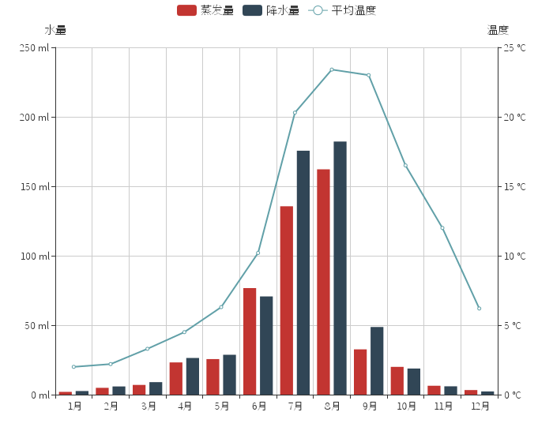
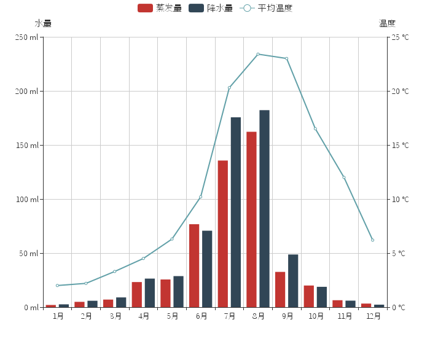

ECharts3 带来了什么
ECharts 在 github 上沉寂了数个月，想必很多小伙伴充满了各种疑问，ECharts是不是不维护了？你们以后是不是不做了？别着急，其实这几个月，我们的设计师、工程师一直厉兵秣马，加班加点，没有周末，没有女朋友地疯狂工作中。
终于，ECharts 的又一个重大版本即将出炉，在 ECharts 3 正式版发行前，我们选择了今天，12.3，一个能够隐喻我们一步一步从1.0到2.0再到3.0走来的日子，提前给广大用户带来 ECharts 3 的测试版。
那 ECharts 3 究竟会有哪些新的特征，我们用数月究竟在颠覆着自己的什么呢？接下来让我们一一为您道来：
焕然一新的面貌


 



从底层的技术架构到上层的外观展现，都进行了较大的升级。无需多言，请看下面的诸多例子。
数据和坐标系的抽象及统一
ECharts 3 中，数据结构进行了统一化抽象，最常用的数据结构有：线性表、树、图。例如，线性表以及树、图的节点列表的结构可以归一化为这样的二维数组：
[
[1,91,45,125,"良"],
[2,65,27,78,"良"],
[3,83,60,84,"优"],
...
]
这种设计利于跨组件的数据处理（数据过滤、视觉编码等），并且为多维度的数据使用带来了方便。
ECharts 3 中另一个重要的数据结构抽象是独立出了“坐标系”概念。事实上在 ECharts 2 中已经有grid polar配置项存在，但是并不是按一个“坐标系”的理解去实现的。ECharts 3 中，支持了直角坐标系（catesian，兼容 ECharts 2 中的 grid）、极坐标系（polar）、地理坐标系（geo）。图表可以跨坐标系存在，例如折、柱、散点等图可以放在直角坐标系上，也可以放在极坐标系上，甚至可以放在地理坐标系中。
下面是一个极坐标系的例子：
下面是一个散点图在地理坐标系上的例子：
我们要可视化的数据有多种类型，比如“数值型”、“类别型”，数轴也要对这不同的类型给予支持。更细致的，还支持“时间轴”、“对数轴”等。数据和坐标系统一抽象后，能够方便得搭配不同类型的数轴。
下面是一个x轴y轴均为“类别型“数轴（category）的例子：
一个 ECharts 实例中，也可以同时存在多个坐标系了，这便于做出更丰富的协同分析效果。
下面是著名的 Anscombe's Quartet：
其实，ECharts 3 中每一种组件都可以同时存在多个。比如可以使用多个dataRange组件进行更复杂的筛选，多个title组件表达更个性化的文字展示。在 Option 中，用数组来表示每种组件的多个实例，如：
polar: [
{...}, // 第一个极坐标系
{...}, // 第二个极坐标系
...
]
移动支持
流量珍贵的移动端需要图表库的体积尽量小。ECharts 和 ZRender 代码的重构，带来了核心部分体积的减小。ECharts 组件众多，并且会逐渐增加，我们提供了更细粒度的按需打包能力。最小体积缩小为 ECharts 2 的 40%。
这是 ECharts 3 的 在线构建页面
移动端交互也做了优化，例如移动端小屏上适于用手指在坐标系中进行缩放、平移。 PC 端也可以用鼠标在图中进行缩放（用鼠标滚轮）、平移，如下图：
配置方式说明：
chart.setOption({
..., // 其他配置项
dataZoom: [
// 下面来定义三个 dataZoom 组件
{
type: 'inside', // 表示手指或鼠标的操作区域在坐标系中。
xAxis: 0,
start: 20,
end: 70
}
]
});
另外说一个细节：ECharts 2 中，直角坐标系的位置设置参数（x, y, x2, y2 等），设置的是“两个数轴所形成的矩形”的位置，并不包含数轴的文字、刻度。这种做法使得数据变化时数轴位置能够稳定，从而方便存在动态数据或数据过滤组件（dataZoom）等场景下的展示。但是缺点是，使用者需要估算数轴文字的宽度，并不方便使用。ECharts 3 中，直角坐标系（grid属性）中加入了 containLabel 参数，位置参数包含了数轴文字的尺寸，从而方便自适应数轴文字的宽度，不用担心超出屏幕。
grid: {
containLabel: true
}
ECharts 3 还将持续对移动端的体验进行优化。
更深度的交互式数据探索
交互是从数据中发掘信息的重要手段。总览为先 缩放过滤 按需查看细节是数据可视化交互的基本需求。
ECharts 一直在“交互”的路上前进，legend dataRange dataZoom roam select tooltip 等组件提供了数据筛取、视图缩放、展示细节等能力。
ECharts 3 中，对这些组件进行了广泛增强，例如支持在数据的各种坐标轴、维度进行数据过滤、缩放，以及在更多的图中采用这些组件。下面举几个例子。
在任何数轴，都支持使用dataZoom组件进行数据窗口操作。
如上图，在左右y轴的dataZoom，
配置方式说明：
chart.setOption({
..., // 其他配置项
dataZoom: [
// 下面来定义三个 dataZoom 组件
{
xAxis: 0, // 这个 dataZoom 组件控制x轴。
start: 10, // 初始时，区域开始自总长的 10%。
end: 30 // 初始时，区域结尾为总长的 30%。
},
{
yAxis: 0, // 这个 dataZoom 组件控制第一个 y 轴。
filterMode: 'empty' // 数据过滤的方式，可选值 'filter' 或 'empty'。
// 'filter' 表示 dataZoom 窗口外的节点直接删去，折线会连接。
// 'empty' 表示 dataZoom 窗口外的节点设置为缺失点，折线会断开。
},
{
yAxis: 1 // 这个 dataZoom 组件控制第二个y轴
}
]
});
另一个例子：
上图的数据实际是多维的：
[
[1,91,45,125,0.82,34,23,"良"],
[2,65,27,78,0.86,45,29,"良"],
[3,83,60,84,1.09,73,27,"良"],
[4,109,81,121,1.28,68,51,"良"],
[5,106,77,114,1.07,55,51,"轻度污染"],
[6,109,81,121,1.28,68,51,"轻度污染"],
[7,106,77,114,1.07,55,51,"轻度污染"],
[8,89,65,78,0.86,51,26,"良"],
...
]
里面每一列是一个维度，从左到右，依次是：
日期 AQI指数 PM2.5 PM10 一氧化碳 (CO) 二氧化氮 (NO2)
二氧化硫 (SO2) 等级。
一个直角坐标系只有两个轴，我们可以把第一个维度（时间）映射到x轴，第二个维度（AQI指数）映射到y轴。但如果想对其他维度的数据进行视觉表达和交互式的筛选，则可以用到上图中的dataRange组件。
第一个dataRange组件表达了PM2.5这一维度的筛选，把数值映射到了圆形大小；
第二个dataRange组件表达了二氧化硫这一维度的筛选，把数值映射到了颜色明暗。
配置方式说明：
视觉映射配置在inRange outOfRange属性中。
图表的和dataRange组件本身的能分别配置这两个属性（见下面方controller属性）
。
inRange outOfRange中，能够配置的视觉通道有：color, colorSaturation, colorLightness, colorHue, symbol, symbolSize。
color设置为颜色值列表，如[#324123, '#453e2f', '#756ff2', ...]，会自动根据数值进行差值计算，得到映射的颜色。
其他视觉通道均使用数组的形式表明 [最小值, 最大值]。
chart.setOption({
..., // 其他配置项
dataRange: [
{ // 右上方的 dataRange 组件
dimension: 2, // 这个 dataRange 组件把维度2的数值进行视觉映射
// 维度从零开始计数，维度值2表示第三个维度。
min: 0, // 最小值
max: 250, // 最大值
calculable: true,
text: ['圆形大小：PM2.5'],
inRange: {
symbolSize: [10, 70] // 选中范围内的数值被映射到 10px~70px 的图形尺寸上
},
outOfRange: {
symbolSize: [10, 70], // 选中范围外的数值被映射到 10px~70px 的图形尺寸上
color: ['rgba(255,255,255,.2)'] // 选中范围外设置为灰色
},
controller: {
inRange: {
color: ['#c23531'] // dataRange 组件本身的（选中范围内的）颜色
},
outOfRange: {
color: ['#444'] // dataRange 组件本身的颜色（选中范围外的）颜色
}
},
..., // 其他位置、尺寸、样式相关配置项
},
{ // 右下方的 dataRange 组件
dimension: 6, // 这个dataRange组件把维度6的数值进行视觉映射
min: 0,
max: 50,
calculable: true,
precision: 0.1,
text: ['明暗：二氧化硫'],
inRange: {
colorLightness: [1, 0.5] // 选中范围内的数值被映射到1~0.5的颜色亮度上
// 颜色亮度（lightness）的含义是 HLV 中的L。
},
outOfRange: {
color: ['rgba(255,255,255,.2)'] // dataRange 组件本身的颜色（选中范围外的）颜色
},
controller: {
inRange: {
color: ['#c23531'] // dataRange 组件本身的（选中范围内的）颜色
},
outOfRange: {
color: ['#444'] // dataRange 组件本身的颜色（选中范围外的）颜色
}
}
}
]
});
更丰富的视觉编码手段
“数据可视化”本质是数据到视觉元素的编码过程。我们把数据映射到坐标系中的点，或者颜色、形状、图形大小等视觉通道。前述的dataRange提供了丰富的视觉编码的方式。另外在各种图中，也提供了一些有一定意义的视觉编码方式。例如：
这个Treemap是奥巴马2012年的预算，每种类别的预算额度映射到了面积，使我们可以直观地感受到预算额的大小。而如果在这个图上，要进一步描述相比于 2011年 的增长率，我们可以将其映射到颜色的明暗度上。点击右上角图例中第三项“增长率”，能体会到这种比较效果。
映射到明暗的配置方式说明：
chart.setOption({
..., // 其他配置项
series: [
{
type: 'treemap',
data: [
{
value: [121212, 131313, 50],
name: 'Centers for Medicare',
children: [
{ ... }
]
},
...
],
visualDimension: 2, // 表示用 data 的 value[2] 的数值（即增长率）进行颜色映射
levels: [ // levels 中设置了树的每层级的参数。level[0]是最顶层。
{
color: [
'#c23531', '#314656', '#61a0a8', '#dd8668',
'#91c7ae', '#6e7074', '#61a0a8', '#bda29a',
'#44525d', '#c4ccd3'
], // 这是根层级的颜色列表，每个块分配的颜色会向子树传递
colorMappingBy: 'id' // 表示根层级的的数值按照类别映射到映射列表
},
{
colorAlpha: [0.5, 1] // 第二层级开始，数值映射到 color 的 alpha 值。
}
],
... // treemap series 中其他配置项
}
]
});
动画
支持动画并不容易，容易带来代码结构的复杂、体积的增加、鲁棒性的降低。但是在可视化中动画往往易于表达出数据在变化时的联系，使用户不至于迷失焦点，这些对于用户交互分析、动态数据展示有着重要作用。
ECharts 3 中在各种初始动画、转换动画、强调动画上都做了相当多的工作，使得数据观察更人性和清晰。
动画表达变化的一个例子，各国人均收入（x轴）、平均寿命（y轴）、人口（圆面积）在时间维度上的展现：
新图表
ECharts 3 中加入了一些新的图表。
关系图（Graph）： 最直观的表达关系数据。支持了 gexf。能够采用不同的布局方法。
Treemap： 易于展示树状结构的数据，较大的数据更容易被关注到。
平行坐标系（Parallel Coordinates）： 易于表达多维数据。
桑基图（Sankey）： 用于表达网状关系型数据的演化过程。
TODO 更多的图表还有待被加入。
Option的变动
ECharts 3 对于 ECharts 2 的 Option 配置兼容，但是一小部分原有的 Option 配置方式已经不被推荐（deprecated），个别细节有所差异。
- 组件/图表位置的统一配置
组件/图表位置的描述，统一采用了x，x2，y，y2，width，height的方式，每个属性值都可以使用绝对数值（表示px）或者百分比（表示占 echarts container 的百分比）。这样的表达方式和 css 比较相近，表达能力比较强，易于屏幕尺寸的适应和调整。
label的配置结构的变化
label属性描述了系列中标签的相关配置信息。
ECharts 2 中，label属性一般放在itemStyle.normal和itemStyle.emphsis中，例如：
itemStyle: {
normal: {
...,
label: {
show: true,
formatter: ...,
textStyle: {
...
}
}
},
emplsis: {
...,
label: {
show: true,
position: 'top',
formatter: ...,
textStyle: {
...
}
}
}
}
为了让结构更合理，ECharts 3 中 label 被移出来和 itemStyle 平级：
itemStyle: {
normal: {
...
},
emphsis: {
...
}
},
label: {
normal: {
...
},
emphasis: {
...
}
}
当然，原来的配置方式还是兼容的，但是不推荐。
另外，ECharts 3 中新增了不少Option配置项，在前面的例子中简单做了一些介绍了，这里不赘述。更多细节会在将要发布的文档中描述。
更丰富、漂亮的图表、更炫酷的动画、更加专业的可视化实现、更深度的交互式数据探索、更丰富的视觉编码手段、更好的移动支持、更好的性能、更小的体积，不知道上面的新特性是否有击中您对于图表、对于数据可视化的需求与痛点，如果还没看过瘾，可以点击我们全新的 示例页面 查看更多漂亮而强大的 ECharts 图表。
在 3.0 正式版发布之前，我们还有很多的工作需要完善：
完善产品质量，这需要广大 ECharts 用户的共同参与，如果您在使用 ECharts 3 测试版过程中有任何问题，欢迎通过以下渠道向我们反馈
- Github Issue
- 通过发邮件给我们的邮箱 echarts-bug@baidu.com
- 加入我们的 ECharts 沟通 Baidu Hi群组（1379172）
完善文档、相关示例、以及学习资料
正式版我们将精耕细作，为大家带来一份优质的新年礼物。
最后，欢迎大家继续支持 ECharts，我们会一如既往地给大家带来优秀的产品。